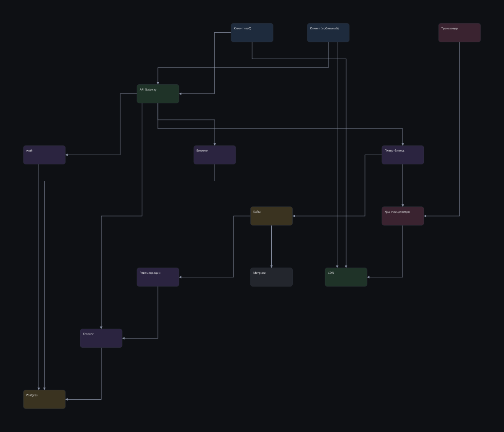
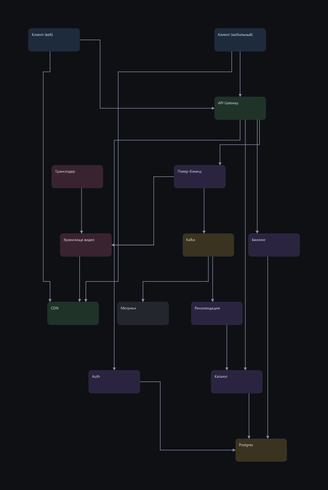
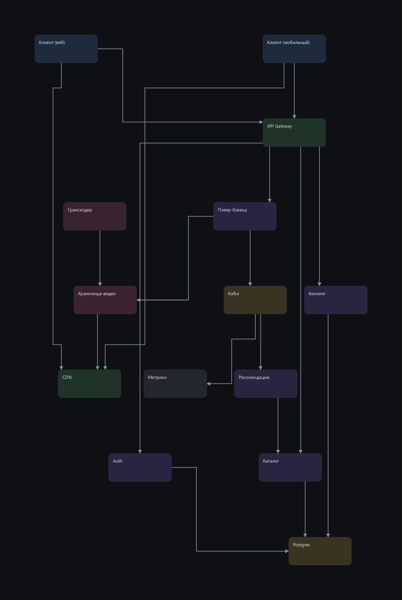
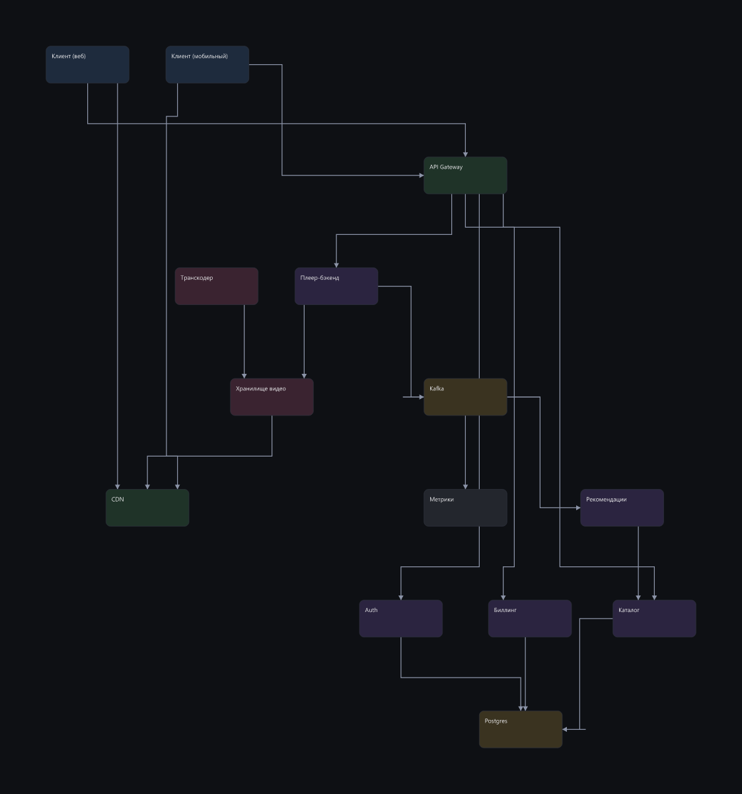
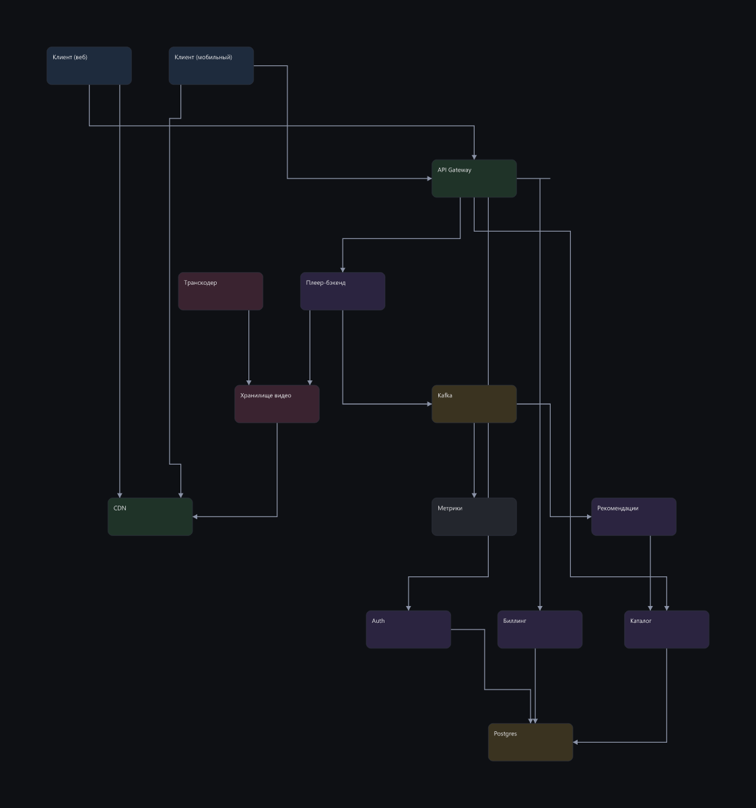

Узлы расставляет каждый движок сам, стрелки прокладывает один и тот же роутер, оценивает одна и та же метрика. Разница — только в расстановке.
штраф 56 · пересечений 14 · наложений 0

штраф 84.3 · пересечений 7 · наложений 0

штраф 66.3 · пересечений 5 · наложений 0

штраф 157.7 · пересечений 13 · наложений 0

штраф 112.6 · пересечений 10 · наложений 0
